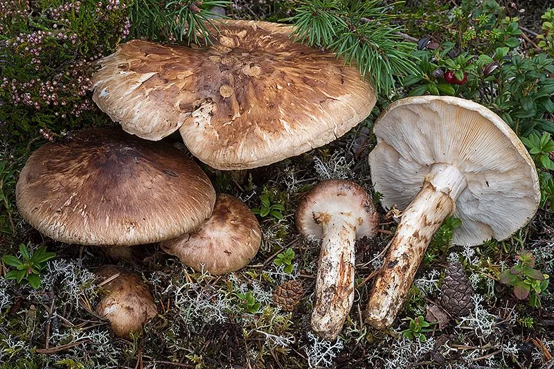

真菌 · 真菌界
松茸 Tricholoma matsutake

松茸菌盖褐色、菌柄粗壮，带有独特的松脂香气，是名贵的野生食用菌，至今仍难以人工规模化栽培。
- 分类
- 门担子菌门纲伞菌纲目伞菌目科口蘑科属口蘑属
- 栖息环境
- 海拔 1600–4000 m 的松栎混交林，与松、栎根系形成菌根
- 地理分布
- 中国云南、四川、西藏及日本、韩国、朝鲜等地
- 保护级别
- IUCN 暂无评估；中国国家二级重点保护野生植物
物种志
松茸是担子菌门口蘑科的菌根真菌，子实体肉质，单生或群生。菌盖初期半球形，后平展，直径 5–20 cm，表面黄褐色至栗褐色，有纤维状鳞片；菌肉白色，肥厚；菌褶白色至淡黄色，弯生，较密；菌柄粗壮，长 5–15 cm，直径 2–5 cm，基部稍膨大，菌环以上白色，以下有褐色纤维状鳞片。孢子印白色。松茸有浓郁的特殊香气。
松茸与松树、栎树等树木的根系形成菌根，野生于海拔 1600–4000 m 的松栎混交林，中国云南、四川、西藏及日本、韩国等地出产。它无法像香菇那样用木屑栽培，至今主要靠野生采集，生长缓慢、产量受气候影响大，因此价格昂贵，被誉为“菌中之王”。松茸香气独特，适合炭火烤、清汤和刺身；富含蛋白质、氨基酸和多糖。由于过度采集和森林破坏，中国已将松茸列为国家二级重点保护野生植物。
形态与习性
- 菌盖直径 5–20 cm，黄褐色至栗褐色
- 菌褶白色至淡黄色，弯生
- 菌柄粗壮，长 5–15 cm
- 孢子印白色
- 习性与松、栎等树木菌根共生
- 采收期秋季幼菇尚未开伞时
- 保护级别国家二级重点保护野生植物
趣味知识
- 松茸靠与松树、栎树形成菌根生存，至今无法人工大规模栽培。
- 采松茸要赶在菌盖未开伞时，开伞后香气和价格都会大打折扣。
- 松茸的独特香气来自多种挥发性物质，其中以松茸醇最有代表性。